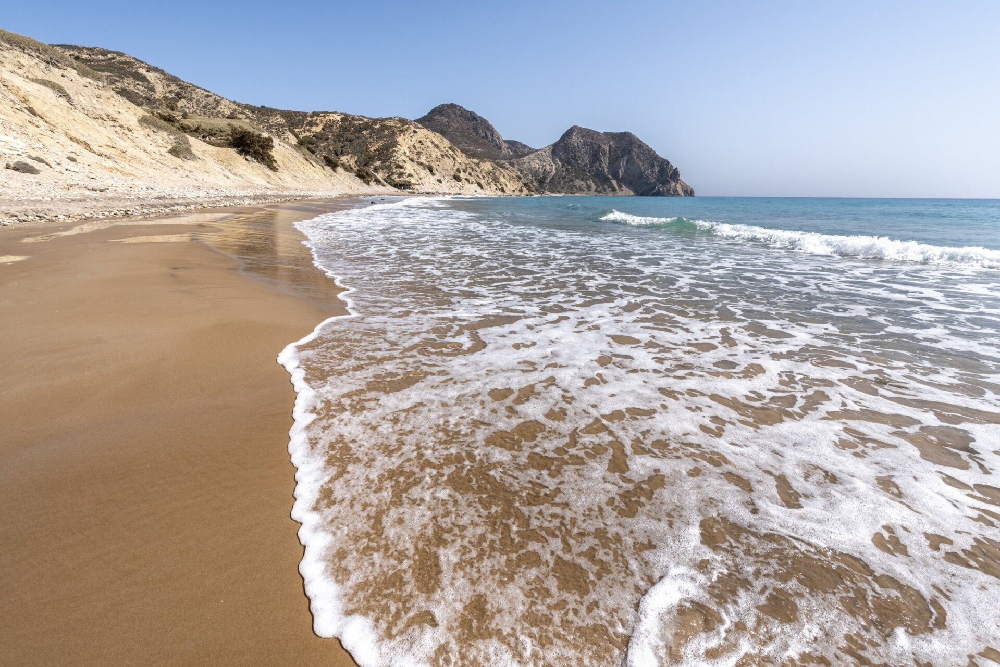

Strand
Het strand zelf heeft een aparte pagina: Kavo Parediso.

Westpunt bij Kefalos. Kliffen, helder water en weinig hotels. Het laatste stuk is een smalle onverharde weg. Verhuurders verbieden die vaak met een huurauto. Scooter, buggy of quad past beter. Op het strand is een klein barretje met parasols.
Het strand zelf heeft een aparte pagina: Kavo Parediso.